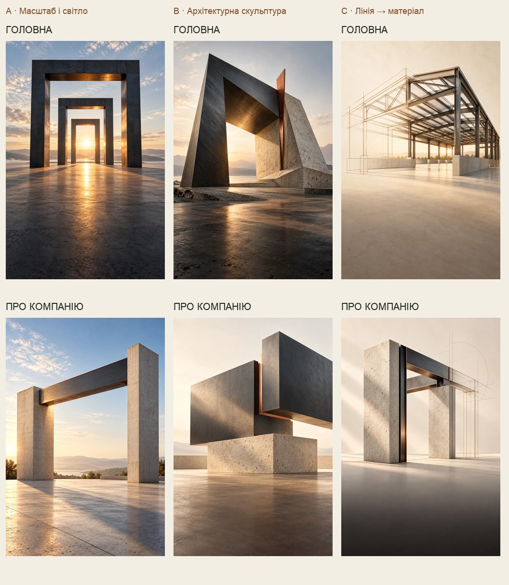

RUBIKON BUILD · ТВОРЧИЙ РАУНД 3
Сталь. Світло. Простір.
Три нові візуальні мови.
Почни з чистих зображень. Потім увімкни «У макеті телефона» й порівняй із текстом сайту. A / B / C — різні творчі напрямки; для головної та «Про компанію» створено окремі сцени.
Це авторські концептуальні ілюстрації та архітектурні артоб’єкти. У макеті збережено «Ілюстрація». Вибір у галереї лишається лише у твоєму браузері.
Напрямок C підключено до живого mobile preview: Головна · Про компанію. A/B лишаються для порівняння.
Мій вибір:
Можна обрати один напрямок для обох сторінок або змішати. Напиши в чат: «Раунд 3: головна B, про компанію C».
Усі шість ідей поруч
